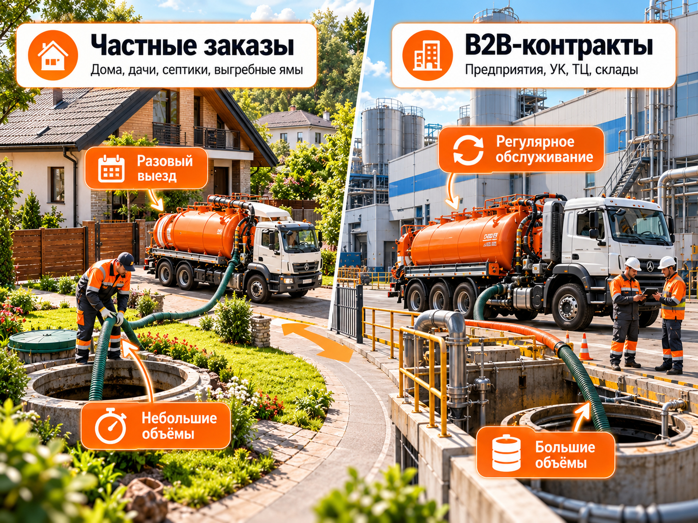
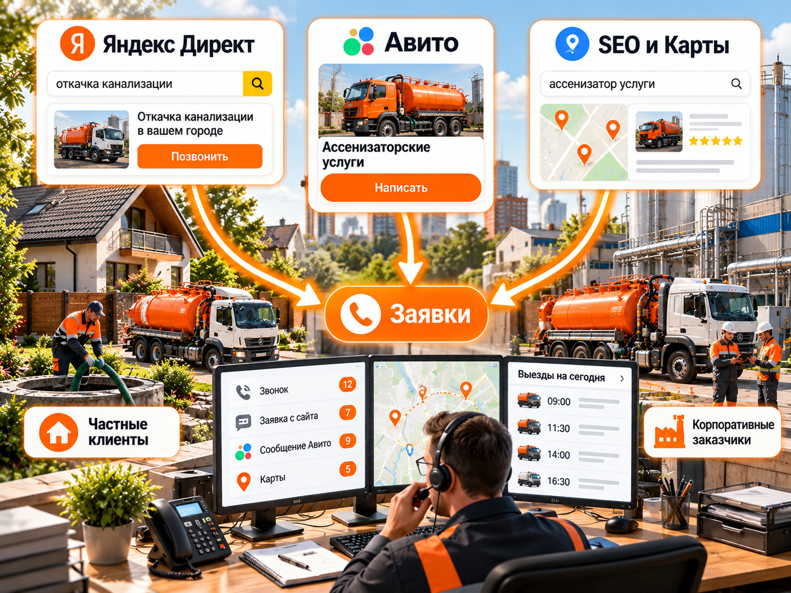
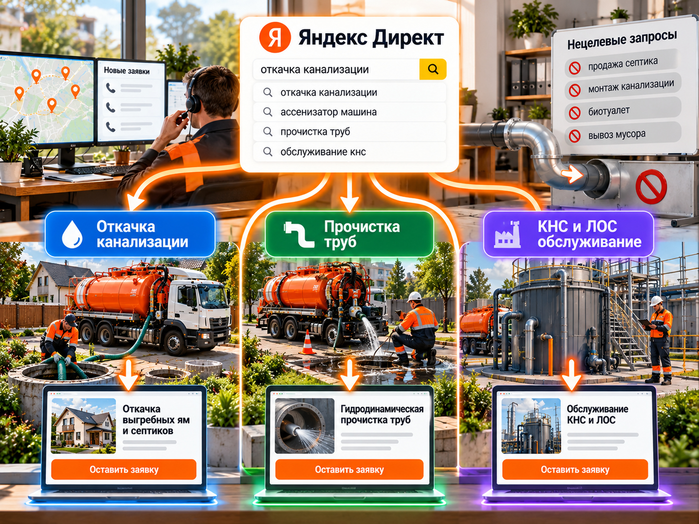
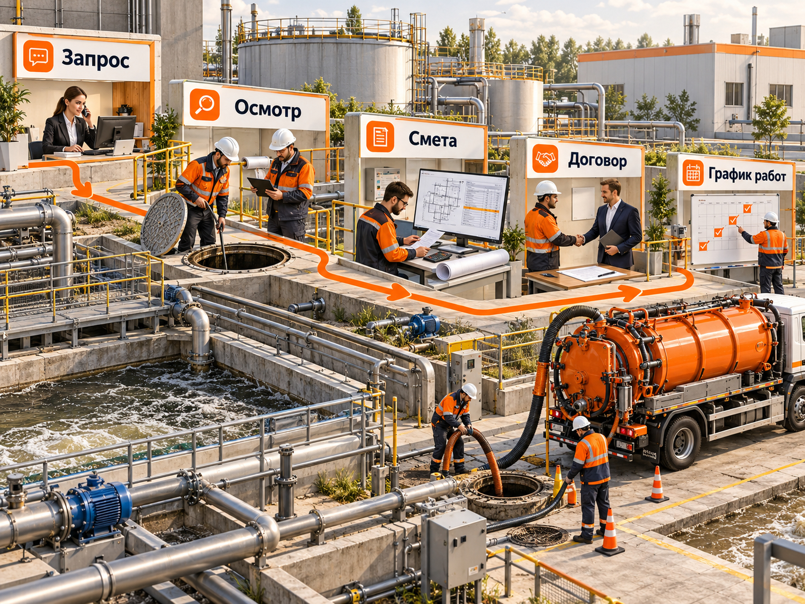

Блог о платном трафике
Продвижение ассенизаторских услуг: реклама, клиенты и прогноз на 2026 год
Для продвижения ассенизаторских услуг я бы начал с поисковой рекламы в Яндекс Директе, объявлений на Авито и хорошо оформленной карточки организации в геосервисах. Параллельно стоит развивать сайт: отдельные страницы под откачку септиков, прочистку канализации, услуги илососа и обслуживание промышленных объектов. Корпоративных заказчиков нужно привлекать отдельно. У них другие запросы, требования к подрядчику и цикл сделки.
Самая частая ошибка в такой нише - считать все обращения одинаковыми. Звонок владельца дачи на один выезд, запрос на аварийную прочистку в ресторане и приглашение к договору на обслуживание КНС могут стоить совершенно по-разному. Оценивать рекламу нужно по выполненным прибыльным заказам и заключённым договорам, а не только по цене заявки.
Ниже - схема продвижения для российского рынка, данные опубликованных кейсов и два расчётных сценария. Цифры прогноза не являются средними по отрасли: их необходимо пересчитать под регион, спрос, парк машин и фактическую конверсию.
Как продвигать ассенизаторские услуги в 2026 году
Первым этапом стоит разделить услуги, клиентов и территорию выезда. Для локальной откачки выгребных ям задача рекламы - получить звонок от человека, которому нужна машина сейчас или в ближайшие дни. Для корпоративного обслуживания задача сложнее: найти ответственное лицо, подтвердить техническую возможность работ, согласовать смету и заключить договор.
На старте распределение усилий обычно выглядит так:
- Собрать горячие запросы по конкретным услугам и географии, запустить поиск Яндекс Директа.
- Опубликовать профильные объявления на Авито, оценивать стоимость целевого контакта и выполненного выезда.
- Заполнить карточки организации в Яндекс Картах и 2ГИС: корректные контакты, услуги, фотографии оборудования, зоны работы и отзывы.
- Сделать посадочные страницы, отвечающие на практические вопросы клиента, и развивать органический поиск.
- Для B2B подготовить отдельные предложения и процесс обработки заявок с техническим специалистом.
Не нужно запускать все рекламные форматы одновременно. Сначала важнее получить измеримый спрос из Поиска и Авито, проверить качество обращений и фактическую загрузку техники.
Кто заказывает откачку и прочистку канализации
Спрос неоднородный даже внутри одной области. Люди по-разному называют услуги, а подрядчику могут понадобиться разные машины и специалисты. Нельзя вести все запросы на страницу «Ассенизаторские услуги» без расшифровки работ.
| Направление | Кто обращается | Что важно при выборе | Характер заказа |
|---|---|---|---|
| Откачка септиков и выгребных ям | Владельцы домов, дач, коттеджей | Цена с учётом дороги, объём машины, длина рукава, ближайший выезд | Чаще разовый, возможны повторы |
| Аварийная прочистка канализации | Частные дома, кафе, магазины, управляющие организации | Скорость реакции, метод прочистки, доступность бригады | Срочный или разовый |
| Услуги илососа и очистка резервуаров | Предприятия, коммерческие объекты, коммунальные подрядчики | Характер загрязнений, характеристики техники, документы, утилизация | Проектный или периодический |
| Обслуживание КНС и ЛОС | Предприятия, управляющие и эксплуатирующие организации | Компетенция инженеров, обследование, регламент и аварийная готовность | Часто договорное обслуживание |
Частные клиенты: дома, дачи, септики и выгребные ямы
В рекламе нужно сразу отвечать на вопросы, из-за которых срывается выезд: работаете ли в конкретном посёлке, сколько кубометров забирает машина, какое расстояние от точки стоянки до колодца, включён ли пробег в цену, можно ли приехать в нужный день. Обещание «срочно» указывают только при реальной возможности быстро отправить машину.
Отдельно учитывайте сезонность дачных направлений. Весной и летом частота обращений в некоторых посёлках может меняться, но реальные пики зависят от заселённости, погоды, условий эксплуатации систем и региона. Для прогноза лучше смотреть собственные обращения и частотность запросов, чем переносить данные другого города.
B2B: предприятия, управляющие компании и коммерческие объекты
Крупный заказчик интересен объёмом работ и возможностью повторных выездов. Но корпоративная сделка не обязательно прибыльнее разовой. Предприятие может запросить отсрочку платежа, выполнение работ в ночное окно, дополнительный персонал, документы по обращению с отходами и фиксированную цену на длительный срок.
На сайте и в коммерческом предложении необходимо перечислить обслуживаемые типы объектов, возможности машин, ограничения по видам отходов и способам их передачи, документы и порядок организации работ. Если компания не обслуживает КНС или не имеет специального оборудования для конкретного вида прочистки, эти направления не нужно обещать ради получения заявки.

Какие каналы продвижения выбрать
| Канал | Основная задача | Когда запускать | Что измерять |
|---|---|---|---|
| Яндекс Директ, Поиск | Перехват спроса по конкретной услуге | В первую очередь | Целевые звонки, заказы, стоимость выполненного заказа |
| Авито, объявления | Локальные обращения на выезд | Параллельно с Поиском | Контакты, доля целевых, подтверждённые и выполненные выезды |
| Авито Реклама | Дополнительный трафик и тест аудиторий, включая бизнес-аудитории | После настройки аналитики | Квалифицированные лиды, заявки с сайта, договоры |
| SEO | Органический спрос по услугам и населённым пунктам | Параллельно, на длинном горизонте | Целевые визиты, обращения и заказы по страницам |
| Яндекс Карты и 2ГИС | Доверие и локальный поиск подрядчика | С самого начала | Звонки, обращения, построение маршрутов там, где это релевантно |
| Прямые B2B-продажи и тендеры | Договоры на регулярные работы | При наличии техники и процесса продаж | Встречи, допущенные предложения, договоры и маржа |
Сайт и SEO нельзя назвать полностью бесплатным каналом: нужны разработка, контент, фотографии, техническая поддержка и время. При этом дополнительные целевые переходы не требуют покупки каждого клика в рекламном аукционе.
Для малого автопарка особенно важно учитывать мощность. Если на один день уже назначены все машины, увеличение рекламного бюджета создаст недовольных клиентов, а не дополнительную прибыль. Рекламу стоит синхронизировать с расписанием и реальной зоной выезда.

Как настроить Яндекс Директ на ассенизаторские услуги
Для этой ниши главным платным инструментом на старте я бы выбрал поиск. Пользователь уже сформулировал задачу, а значит, в объявлении можно точно показать услугу и условия выезда. РСЯ имеет смысл тестировать отдельно и не переносить её показатели в общую оценку Поиска.
Ключевые запросы: откачка, прочистка, илосос и КНС
Начальная структура семантики:
| Группа | Примеры поисковых фраз | Куда вести пользователя |
|---|---|---|
| Откачка | «откачка септика», «откачка выгребной ямы», «ассенизатор заказать», «откачка канализации» | Страница откачки с географией, объёмами и условиями выезда |
| Прочистка | «прочистка канализации», «гидродинамическая прочистка труб», «устранение засора канализации» | Страница прочистки с описанием метода и техники |
| Илосос | «услуги илососа», «аренда илососа с оператором», «очистка резервуаров илососом» | Страница промышленной или специализированной услуги |
| B2B-сервис | «обслуживание КНС», «обслуживание ЛОС», «очистка промышленной канализации» | Отдельная B2B-страница с перечнем работ и документами |
Включайте город, район или населённый пункт в объявления и страницы там, где это оправдано спросом и реальной логистикой. Не создавайте отдельную рекламную кампанию под каждую маленькую деревню при нескольких кликах за месяц: это раздробит статистику и усложнит управление.
География, минус-фразы и разделение B2B/B2C
Семантику нужно чистить не только по словам, но и по намерению. В качестве кандидатов на исключение проверьте запросы «купить септик», «монтаж септика», «сделать своими руками», «схема канализации», «вакансии», «оборудование для прочистки», «биотуалет», «вывоз твёрдого мусора». Слово нельзя автоматически минусовать без проверки: например, «аренда илососа» может быть целевым, если техника предоставляется с оператором.
Не смешивайте в одной группе бытовые засоры и обслуживание очистных сооружений предприятий. У этих клиентов различаются и ценность договора, и посадочная страница, и критерии квалификации.
После запуска регулярно открывайте отчёт «Поисковые запросы» в Яндекс Директе. Его задача - показать реальные формулировки, по которым были показы и переходы, а затем выявить ненужный спрос. Одной предварительной подборки минус-слов недостаточно.

Поиск, РСЯ, объявления и стратегия
Для поиска подготовьте объявления под основные услуги. Например:
Заголовок: Откачка септиков в [городе] | Выезд по согласованию
Текст: Ассенизаторская машина для частных домов. Уточним объём, расстояние до колодца и стоимость до выезда.
Для корпоративной группы:
Заголовок: Обслуживание КНС и ЛОС для организаций
Текст: Обследование объекта, расчёт объёма работ и предложение на регулярное обслуживание. Уточните доступные виды работ.
Квадратные скобки в примерах обозначают место для реального города. В готовых объявлениях следует указывать только подтверждённые характеристики и сроки.
В РСЯ можно попробовать показать реальную технику и конкретный сценарий: «Нужна откачка септика в [районе]?» или «Обслуживание КНС по договору». Но в сравнении нужно учитывать целевые лиды и договоры, а не только более дешёвые клики. Для узкого B2B не стоит автоматически рассчитывать на устойчивый объём конверсий в РСЯ.
При небольшом числе лидов не дробите кампании на десятки стратегий и слабых целей. На старте полезно контролировать стоимость целевых обращений, качество поисковых запросов и фактический расход. Оплату за конверсии не нужно выбирать автоматически: для неё важны доступность и качество данных о целевых действиях.
Продвижение ассенизаторских услуг на Авито
Для локальных выездных услуг Авито стоит тестировать как самостоятельный источник заказов, а не как дополнительную копию сайта. Покупатель сравнивает фотографии машин, заголовок, место работы, отзывы и скорость ответа непосредственно внутри площадки.
Что разместить в объявлении:
- Реальные фотографии конкретной техники и бригады, без чужих снимков.
- Точный тип услуги: откачка септика, прочистка труб или илосос.
- Объём цистерны, доступную длину шланга, условия подъезда и территорию выезда.
- Порядок расчёта цены: минимальный выезд, пробег, дополнительные работы, объём.
- Условия срочного вызова, если срочные выезды действительно выполняются.
Не дублируйте десятки одинаковых объявлений и не указывайте ложную географию. Объявления по разным услугам и реальным территориям должны различаться содержанием и соответствовать правилам площадки.
Платное продвижение объявлений помогает получать больше просмотров внутри выдачи Авито. Его эффективность оценивают по стоимости контакта и выполненного заказа. Если контакт состоит из неотвеченного звонка или вопроса о работе, он не становится продажей.
Авито Реклама - отдельный рекламный кабинет. В материалах ppc.world от 23 июня 2026 года описаны нативные форматы с оплатой за клик, медийные размещения и аудитории по профессиональным признакам, включая владельцев бизнеса и руководителей. Для B2B можно протестировать узкое предложение с переходом на корпоративный лендинг. Но интерес аудитории ещё не означает, что человек закупает именно услуги очистки канализации; качество обращений придётся проверять в CRM.
Что показывают опубликованные результаты Авито
В историческом кейсе AAGENCY по Москве, Московской области, Санкт-Петербургу и Ленинградской области за июнь-август 2025 года агентство сообщило о контактах при расходе в рекламном кабинете 1 332 540 ₽. Из него 788 556 ₽ были покрыты бонусами, а фактические денежные расходы клиента составили около 544 000 ₽. Пересчёт даёт примерно 157 ₽ за контакт по полному расходу и 64 ₽ по фактическим денежным затратам.
Кейс полезен для понимания методики: расходы в кабинете и деньги, реально оплаченные рекламодателем, могут отличаться, а контакты не равны завершённым выездам. Данные относятся к лету 2025 года, поэтому не являются ориентиром рыночной цены лида на конец 2026 года. Партнёрские бонусы нельзя предполагать у каждой компании.
SEO, Яндекс Карты и многостраничный сайт
Оптимальная структура сайта зависит от перечня фактически оказываемых услуг. Вместо десятков одинаковых страниц с заменой названия района подготовьте полноценные разделы, закрывающие разные задачи:
- «Откачка септиков и выгребных ям».
- «Прочистка канализации».
- «Услуги илососа».
- «Очистка резервуаров и колодцев», если выполняется.
- «Обслуживание КНС и ЛОС» для предприятий, если есть техническая компетенция.
- «Зоны выезда» с адресами реального присутствия и понятными условиями обслуживания.
Страница услуги должна содержать метод работы, технику, ограничения, стоимость или способ расчёта, фотографии и форму заявки. Региональную страницу стоит делать только тогда, когда в конкретном населённом пункте есть самостоятельный спрос и полезная информация о выезде. Массовая генерация практически одинаковых страниц ухудшает качество сайта.
Яндекс Карты и 2ГИС особенно актуальны для тех, кто сравнивает подрядчиков рядом с объектом. Проверьте рубрики, номера телефонов, часы работы, наличие адреса или корректного формата выездной компании, фотографии и отзывы. Не публикуйте фиктивные филиалы и адреса. По состоянию на октябрь 2026 года у Яндекс Бизнеса доступны инструменты работы с карточкой; при покупке платного продвижения нужно отдельно оценивать его результат по обращениям.
Как сделать сайт, который приводит заявки
Одного баннера «Ассенизатор недорого» недостаточно. Сайт должен отвечать на вопросы, которые диспетчер всё равно задаст по телефону.
Для частного клиента важны место выезда, объём резервуара, подъезд к нему, расстояние для прокладки рукава, примерные временные окна и понятный порядок расчёта стоимости. Кнопка звонка должна работать с телефона, а форма не должна требовать длинной анкеты при аварии.
Для корпоративного клиента нужны перечень технологических операций, виды техники, характеристика очищаемых объектов, документация, регламент, контакт ответственного специалиста и форма запроса коммерческого предложения. Корпоративную заявку удобно принимать с параметрами объекта, адресом, сроками и контактами ответственного лица.
Для рекламы допустимо использовать два разных лендинга: один для быстрых выездов, второй для регулярного обслуживания. Для SEO практичнее общий многостраничный сайт с самостоятельными страницами услуг. Важнее качество каждой страницы, чем число URL само по себе.
Как получать корпоративные договоры
Для B2B недостаточно написать «Работаем с юридическими лицами». Закупщик или инженер ищет подрядчика, который сможет технически выполнить задачу и подтвердить это документами.
Процесс продажи может выглядеть так:
- Запрос. Уточнить организацию, тип объекта, состав работ и периодичность.
- Осмотр. Проверить объём, доступ, технические ограничения и требования к безопасности.
- Смета. Рассчитать технику, людей, дорогу, приём отходов, дополнительные операции и возможные внеплановые вызовы.
- Договор. Согласовать объём ответственности, порядок приёмки, документы, оплату и сроки.
- График работ. Назначить регулярные выезды, контроль исполнения и резерв на аварийные ситуации.

Кроме рекламных заявок можно работать с управляющими компаниями, промышленными предприятиями, логистическими комплексами, общепитом и строительными организациями. Составьте список организаций в реальной зоне обслуживания и направляйте адресные предложения, если есть подходящий парк техники. Участие в закупках имеет смысл только после расчёта маржи и проверки требований документации.
Документы и ограничения для подрядчика
Для работ с отходами нельзя обещать наличие лицензии «на всё». Нужно определить фактический состав отходов, их класс опасности, выполняемые операции, правила транспортирования и законную схему передачи или размещения. Работы с отходами I-IV классов опасности в предусмотренных законом случаях требуют лицензии по соответствующему виду деятельности.
С 1 сентября 2026 года действует новое положение о лицензировании по постановлению Правительства РФ от 2 июня 2026 года № 675. Росприроднадзор отдельно указывает на обновлённые требования, в том числе на санитарно-эпидемиологическое заключение для транспортирования отходов I-IV классов. Применимость требования нужно проверять по конкретной услуге, виду отходов и документам исполнителя; нельзя автоматически считать любую откачку бытовой канализации лицензируемой по одному названию услуги.
Для маркетинга вывод практический: публикуйте только те разрешения, характеристики оборудования и условия работы, которые действительно относятся к вашим услугам. Это особенно важно при переговорах с предприятиями.
Сколько стоит реклама ассенизаторских услуг: прогноз бюджета
Универсальной средней стоимости лида по России для этой ниши по доступным проверенным кейсам вывести нельзя. Показатели сильно меняются из-за географии, сезонности, плотности застройки, конкуренции, вида оборудования и доступности выездов. Поэтому прогноз строится от допущений, а после теста заменяется фактическими данными.
Расчёт заявок и заказов для B2C
Возьмём условную кампанию по откачке септиков с бюджетом 60 000 ₽. Допустим, средняя цена клика равна 60 ₽, 5% кликов превращаются в обращения, а 40% обращений - в оплаченные выполненные заказы.
| Этап | Формула | Пример |
|---|---|---|
| Рекламный бюджет | Допущение | 60 000 ₽ |
| Клики | 60 000 / 60 | |
| Обращения | × 5% | 50 |
| Стоимость обращения, CPL | 60 000 / 50 | ₽ |
| Выполненные заказы | 50 × 40% | 20 |
| Рекламные затраты на заказ, CAC | 60 000 / 20 | ₽ |
Это арифметический пример, а не обещание результата. В малом городе может не оказаться подходящих поисковых кликов за выбранный период, а в крупном регионе CPC и конверсия могут отличаться. До запуска спрос и ставки нужно проверить в прогнозе Директа и по реальной выдаче, затем уточнить по результатам теста.
Разница между CPL и CAC принципиальная. В примере обращение обходится в ₽, но выполненный заказ - уже в ₽. Если диспетчер не дозвонился, машина не доехала или клиент отказался после расчёта, маркетинговые расходы не превращаются в выручку.
Расчёт квалифицированных лидов и договоров для B2B
Условный пример для услуг по обслуживанию промышленных объектов: бюджет 90 000 ₽, CPC 150 ₽, конверсия клика в обращение 5%, доля квалифицированных обращений 40%, конверсия квалифицированного лида в договор 25%.
| Этап | Расчёт | Пример |
|---|---|---|
| Клики | 90 000 / 150 | 600 |
| Обращения | 600 × 5% | 30 |
| Квалифицированные лиды | 30 × 40% | 12 |
| Стоимость квалифицированного лида | 90 000 / 12 | ₽ |
| Договоры | 12 × 25% | 3 |
| Расход на один договор | 90 000 / 3 | 30 000 ₽ |
В узкой B2B-нише 600 подходящих кликов могут быть недоступны за месяц даже при достаточном бюджете. Кроме того, договоры часто заключаются позже рекламного периода. Это модель воронки, а не календарный прогноз: нельзя обещать три новых договора за 30 дней.
Для принятия решения используйте формулу: допустимый CPL = допустимая стоимость привлечения клиента × конверсия обращения в клиента. Для B2B полезнее сначала рассчитать стоимость квалифицированного лида, а затем доходность договора за весь ожидаемый период сотрудничества.
Что показывают опубликованные кейсы
В кейсе Михаила Попыванова, опубликованном 5 апреля 2026 года, для компании по ремонту и обслуживанию КНС, ЛОС и промышленного насосного оборудования в сентябре-октябре 2025 года расходы Яндекс Директа с НДС составили 132 625,49 ₽, получено 36 лидов. Проверка арифметики даёт ,04 ₽ за лид. Авторы сообщают, что из исходных поисковых запросов после очистки оставили 793. В их проекте РСЯ показала более дорогие и менее качественные обращения, чем поисковая кампания.
Это кейс смежного инженерного B2B-сегмента, а не откачки бытовых септиков. В нём не раскрыта точная доля квалифицированных лидов и число договоров. Поэтому ₽ нельзя считать средней ценой лида по ассенизаторским услугам. Польза кейса - в подтверждении роли технической семантики, квалификации заявок и раздельной оценки каналов.
Для Авито выше приведён исторический пример AAGENCY за лето 2025 года. Его нельзя смешивать с цифрами Директа или объявлять ориентиром для октября 2026 года: разные географии, услуги, периоды, правила учёта и бонусные условия.
Как оценивать окупаемость рекламы
У ассенизаторской компании финансовый результат зависит от загруженности автопарка и переменных расходов конкретного рейса. В стоимость выполненного выезда входят не только топливо, но и оплата работников, расходники, приём и передача отходов по законной схеме, пробег, простои и дополнительные операции.
Пример расчёта B2C. Пусть заказ приносит ₽ выручки, а переменные затраты на него составляют ₽. Тогда маржинальный доход до рекламных расходов равен ₽. При CAC ₽, полученном в модельном расчёте выше, результат составляет минус 300 ₽ на заказ ещё до учёта постоянных расходов. Такая рекламная экономика не подходит, даже если стоимость заявки кажется приемлемой.
Если при той же стоимости привлечения заказ приносит ₽, а переменные расходы составляют ₽, остаётся ₽ после рекламы, но до постоянных расходов и налогов. Обе пары чисел - допущения для проверки формулы, а не опубликованные расценки на рынке.
Пример B2B. Допустим, договор предусматривает выручку 120 000 ₽ в месяц, переменные расходы 85 000 ₽ и шесть месяцев обслуживания. Маржинальный доход за срок договора составит (120 000 - 85 000) × 6 = 210 000 ₽. При рекламной стоимости договора 30 000 ₽ останется 180 000 ₽ до постоянных расходов, налогов, финансирования и возможных простоев. Это объясняет привлекательность повторных контрактов, но не гарантирует прибыльность каждого тендера.
Минимальный набор показателей для управления рекламой: расходы по каналу, целевые обращения, квалифицированные обращения, согласованные выезды, выполненные и оплаченные заказы, маржинальный доход, повторные покупки и загрузка каждой машины. Для B2B отдельно учитывайте назначенные обследования, отправленные сметы, выигранные договоры и срок до первой оплаты.
Настройте цели Яндекс Метрики, UTM-метки и коллтрекинг там, где он экономически оправдан. Не учите рекламную систему оптимизироваться лишь на любой клик по телефону: по возможности передавайте в аналитику квалифицированные и завершённые обращения из CRM. Для Авито сопоставляйте контакты площадки с собственной диспетчерской системой, исключая дубли.
Ошибки продвижения и пошаговый план запуска
Привлекать неподходящие услуги. Если компания занимается только откачкой, показы по запросам на монтаж септика и покупку каналопромывочной машины расходуют бюджет. Проверяйте реальные поисковые запросы и объявления.
Одинаковая реклама для физлиц и предприятий. Промышленному заказчику нужны техника, документы и договор, частному клиенту - ближайший выезд и понятная стоимость. Разные запросы должны вести на разные страницы.
Обещать несуществующую географию и сроки. Лишний пробег или невозможность выезда обнуляют ценность обращения. При настройке рекламы учитывайте маршрут, график, доступность машин и допустимую себестоимость рейса.
Оценивать результат по звонкам. Большое число контактов может скрывать отмены, неподходящие адреса и нерентабельные заказы. Сверяйте рекламные данные с фактическим выполнением и оплатой.
Не отвечать на срочные обращения. Для аварийных работ клиент может быстро выбрать следующего подрядчика. Подключите пропущенные вызовы к диспетчерской очереди и назначьте ответственного за обратную связь.
Практический запуск на первые 30 дней:
- Дни 1-5. Провести инвентаризацию услуг, техники, доступных районов и маржи по типовым выездам. Определить, какие B2B-работы компания вправе и технически может выполнять.
- Дни 6-10. Подготовить посадочные страницы, объявления Авито, фотографии и карточки организации. Настроить учёт источников, звонков и заказов.
- Дни 11-20. Запустить поиск Директа по прямому спросу и тест платного продвижения Авито. Отдельно отслеживать B2B-запросы. Проверять поисковые фразы и качество обращений.
- Дни 21-30. Сопоставить CPL, долю целевых контактов, выполненные заказы и маржу. Отключить нерентабельные направления, скорректировать географию и перераспределить расходы по доступности техники.
В результате первых 30 дней нужно получить не абстрактное количество лидов, а рабочую модель: какие услуги и районы приносят оплаченные прибыльные выезды, где нужен отдельный корпоративный отдел продаж и какую дополнительную загрузку способен переварить автопарк.
Для более подробной настройки инструментов пригодятся материалы о рекламе септиков, о продвижении B2B-компаний, о сравнении Авито и Яндекс Директа и о расчёте рекламного бюджета.